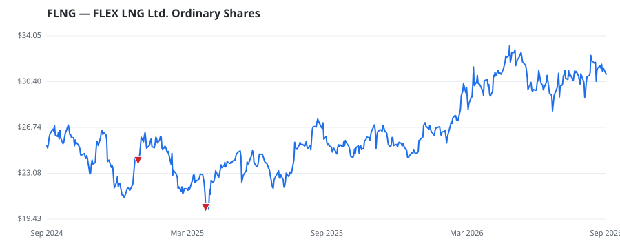

bullish · bearish · n/a — dots: price>SMA10 · SMA10>SMA50 · SMA50>SMA200 · up>down volume (20d)
Other · small cap

Flex LNG Ltd is an LNG shipping company with a fleet of next-generation LNG carriers with large cargo capacity. The company's fleet consists of several LNG carriers on the water, and all of its vessels are of the latest generation equipped with two-stroke propulsion. Its fleet consists of M-type, Electronically Controlled, Gas Injection (MEGI) LNG carriers and Generation X Dual Fuel (X-DF) LNG carriers, offering improvements in fuel efficiency and thus also carbon footprint compared to the older steam and four-stroke propelled ships. The company has one reportable segment: vessel operations, w · website